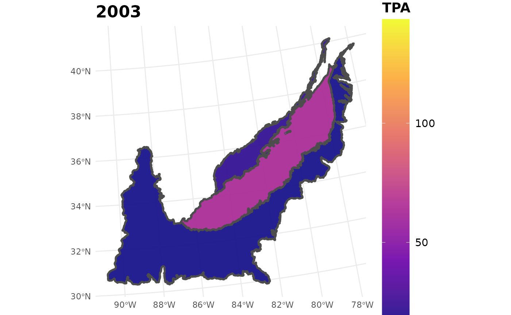
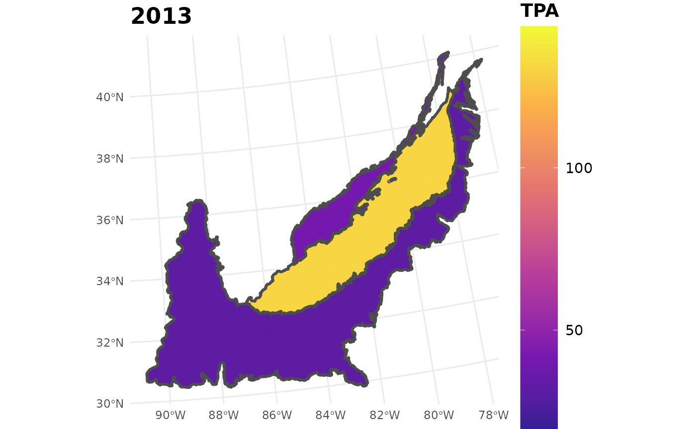
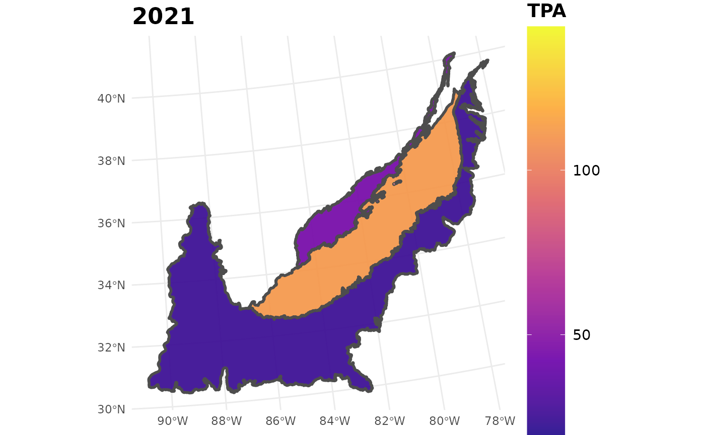
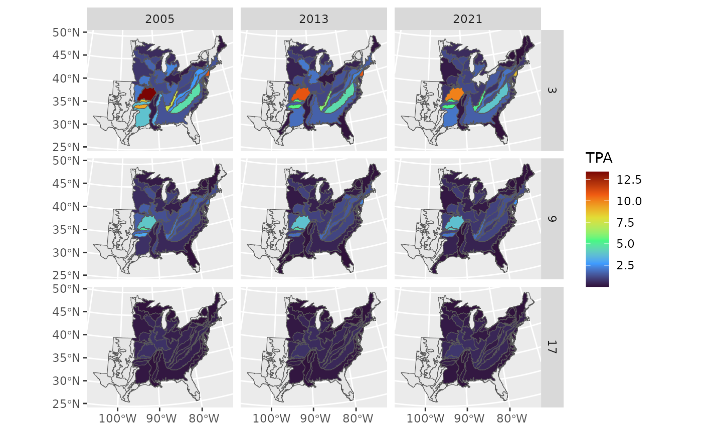
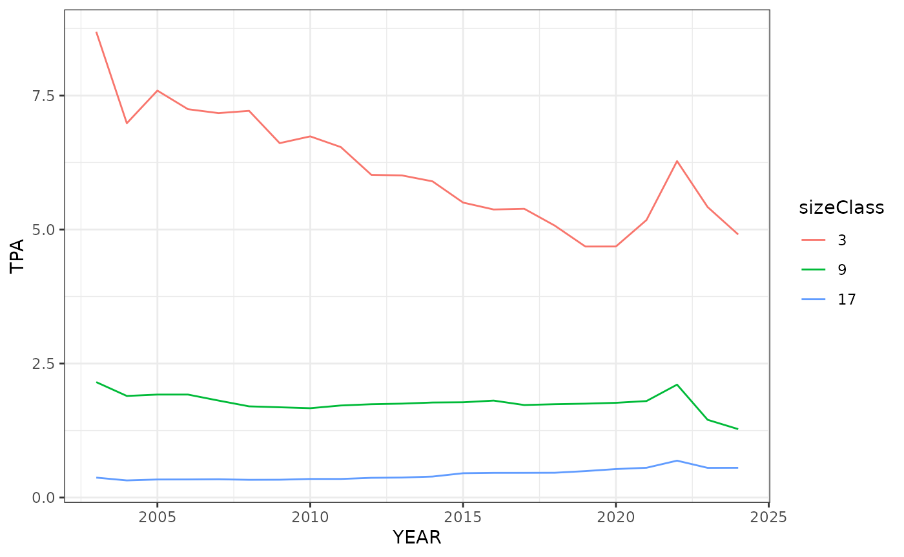
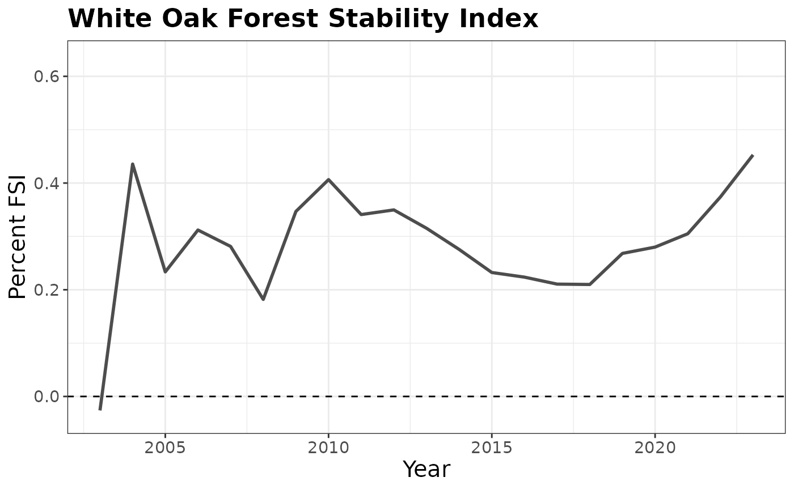

Estimating change in white oak populations across its range in the eastern US
Maya Shaver, Jeffrey W. Doser
2025-07-24
Source:vignettes/white_oak.Rmd
white_oak.RmdIntroduction
Oak regeneration and the effects of mesophication have become substantial concerns in the United States given the importance of oaks for numerous wildlife species and their importance in local and regional timber economies. There has been an observed “oak bottleneck” where the majority of current oak forests are mature with little to no advanced regeneration occurring. This lack of advanced regeneration is believed to be caused by multiple factors, with mesophication and fire suppression being two of them. Mesophication is the process where shade-tolerant, fire-intolerant species such as yellow-poplar and red maple become more common in areas historically dominated by fire-tolerant species (e.g., oaks). Understanding large-scale shifts and patterns in oak-dominated forests, and how ecological silviculture may help to promote successful oak regeneration, is an important and ongoing area of research.
In this vignette, we seek to leverage the FIA data set and
rFIA to examine patterns of abundance, seedling
regeneration, and relative live tree density for a single ecologically
and economically important oak species, white oak (Quercus
alba), across it’s native range. Our objective is to highlight the
potential of rFIA to help inform broad-scale research
questions. Here we will showcase the use of three estimation functions
in rFIA: seedling(), tpa(), and
fsi().
More specifically, the analysis will provide insights on the following questions:
- How has white oak seedling (<1in) abundance (TPA) shifted over time within different ecoregions of the eastern US?
- How has the abundance (TPA) of white oak shifted across different size classes within different ecoregions of the eastern US from 2003-2023?
- How has the forest stability index (FSI), a measure of relative tree density, shifted from 2003-2023, for white oak on average across the eastern US? How do these changes vary across different ecoregions of the eastern US?
Getting Set Up
To get started we need to load in rFIA and a few R
packages we will use for working with spatial data and making plots.
Note that we also specify a directory where we the FIA data we download
will live. You should change this to the directory you want to use on
your machine.
library(dplyr)
library(rFIA)
library(sf)
library(maps)
library(gifski)
library(gganimate)
library(ggplot2)
library(R2jags)
# Change your directories for reading in data as needed
fia_dir <- '~/Dropbox/data/fia/'
eco_dir <- '~/Dropbox/data/usgs-ecoregions/'Next, we will download the FIA data across the natural range of white oak. White oak is distributed across most of the eastern US. When you have downloaded the data, you can comment out the code below so you don’t re-run the downloads on accident. Note the first line of code below that we typically require before downloading any FIA data, which tells R to continue downloading data from the internet for 2 hours (7200 seconds).
# Gives R 120 minutes to download large FIA files.
options(timeout = 7200)
# The states we want to use.
states <- c('TX', 'OK', 'KS', 'MN', 'IA', 'MO', 'AR', 'LA', 'WI', 'IL',
'MI', 'IN', 'OH', 'KY', 'TN', 'MS', 'AL', 'ME', 'NH', 'VT',
'MA', 'RI', 'CT', 'NY', 'PA', 'NJ', 'DE', 'MD', 'WV', 'VA',
'NC', 'SC', 'GA', 'FL')
# Note that this will take some time to download these files.
getFIA(states = states, dir = fia_dir, load = FALSE) Next, because we want to summarize white oak metrics within distinct
ecoregions across its range, we need to download the spatial data for
the Level
3 Ecoregion shapefile. Download the data on your own machine and
save them in the directory of your choice. Alternatively, we could use
ecological subsection codes defined directly in the database, but here
we use the ecoregion shapefiles as an example of using spatial data in
rFIA estimation functions. Below we read in the shapefiles
using read_sf() from the sf package.
Almost done with setting things up! This code chunk will generate an
sf object containing the polygons of the individual states
in our study region. At the end of the code chunk, we produce a map of
the states and their ecoregions. Keep in mind that the map can take a
while to load, so it may be useful to only work with a few states if you
want to test the code out on your own.
# Extract a state map of the USA using maps::map
usa <- st_as_sf(maps::map("state", fill = TRUE, plot = FALSE))
# Albers equal area
my.crs <- "+proj=aea +lat_1=29.5 +lat_2=45.5 +lat_0=37.5 +lon_0=-96 +x_0=0 +y_0=0 +ellps=GRS80 +datum=NAD83 +units=km +no_defs"
# Convert USA map to AEA
usa <- usa %>%
st_transform(crs = my.crs)
# Just extract states across the eastern US
state.names <- c('north carolina', 'virginia', 'kentucky', 'tennessee',
'arkansas', 'south carolina', 'louisiana', 'mississippi',
'alabama', 'georgia', 'florida', 'oklahoma', 'texas',
'kansas', 'missouri', 'iowa', 'minnesota', 'wisconsin',
'illinois', 'michigan', 'indiana', 'ohio',
'west virginia', 'maryland', 'delaware', 'new jersey',
'pennsylvania', 'new york', 'connecticut',
'rhode island', 'massachusetts', 'vermont',
'new hampshire', 'maine')
east.usa <- usa %>%
dplyr::filter(ID %in% state.names)
# Combine all states into one polygon
east <- st_union(st_make_valid(east.usa))
# project east to the projection system of the ecoregions
east <- east %>%
st_transform(crs = st_crs(eco))
# Simplify the ecoregion data frame a bit.
eco <- eco %>%
group_by(US_L3CODE) %>%
summarize(geometry = st_union(geometry))
# Intersect the states of interest with the full US ecoregions
east_eco <- st_intersection(east, eco)
east_eco <- st_as_sf(east_eco)
# This is now our complete study area of interest
plot(east_eco)
Lastly, we need to read in the FIA data we previously downloaded.
Because we will be working with FIA data from about half of the
continental US, we set the argument inMemory = FALSE to
prevent R from storing the data in memory. This argument is essential to
allowing you to answer large-scale questions with FIA data directly on a
laptop.
fia_data <- readFIA(dir = fia_dir, states = states, inMemory = FALSE)Shifts in white oak seedling abundance
Now that everything is set up, we can start to answer our first
question. We want to quantify changes in white oak seedling
(in
diameter at breast height) abundance across the different ecoregions in
the eastern US. Doing this requires one simple call to the
seedling() function in rFIA. Because we only
want estimates for white oak, we use the treeDomain
argument to only use tree measurements from trees identified as white
oak. The species code (SPCD) for white oak is 802.
# Note this code will take a few minutes.
seed_ests <- seedling(fia_data, polys = east_eco, returnSpatial = TRUE,
treeDomain = SPCD == 802)
# Take a look at the output
str(seed_ests)## sf [1,059 × 8] (S3: sf/tbl_df/tbl/data.frame)
## $ YEAR : num [1:1059] 2003 2003 2003 2003 2003 ...
## $ polyID : int [1:1059] 3 4 5 6 7 17 18 19 20 21 ...
## $ TPA : num [1:1059] 0 0 0 0 0 ...
## $ TPA_SE : num [1:1059] NaN NaN NaN NaN NaN ...
## $ nPlots_TREE: int [1:1059] 3 9 72 50 16 2692 737 4949 8 516 ...
## $ nPlots_AREA: int [1:1059] 3 9 72 50 16 2692 737 4949 8 516 ...
## $ N : int [1:1059] 3403 3403 5224 1870 1029 6508 10748 19135 4252 16487 ...
## $ x :sfc_GEOMETRY of length 1059; first list element: List of 3
## ..$ :List of 1
## .. ..$ : num [1:9515, 1:2] -664796 -664132 -660521 -656377 -652188 ...
## ..$ :List of 1
## .. ..$ : num [1:6337, 1:2] -632189 -631191 -628577 -624964 -620907 ...
## ..$ :List of 1
## .. ..$ : num [1:31, 1:2] -581171 -581364 -581420 -581811 -581891 ...
## ..- attr(*, "class")= chr [1:3] "XY" "MULTIPOLYGON" "sfg"
## - attr(*, "sf_column")= chr "x"
## - attr(*, "agr")= Factor w/ 3 levels "constant","aggregate",..: NA NA NA NA NA NA NA
## ..- attr(*, "names")= chr [1:7] "YEAR" "polyID" "TPA" "TPA_SE" ...Notice that each row in the seed_ests data frame
corresponds to an estimate of white oak seedlings per acre in a given
year in a given ecoregion. Using these estimates, we can make a simple
GIF to visualize the shift of seedling TPA from 2003-2023. This is
quickly accomplished by a simple call to the plotFIA()
function.
plotFIA(seed_ests, y = TPA, animate = TRUE, plot.title = "Abundance (TPA)",
color.option = "plasma")
Looking at the GIF, a trend is present in the seedling abundance. Across the ecoregions, seedlings per acre tends to increase and then subsequently decrease.
Let’s zoom in a bit on a couple specific ecoregions.
# Zoom in on NC, VA, TN, and SC
sub.states <- c('north carolina', 'virginia', 'tennessee',
'south carolina')
# Zoom in on the Southeastern Plains, Piedmont, and Blue Ridge
seed_ests_sub <- seed_ests %>%
filter(polyID %in% c(19, 39, 40))
#Use `plotFIA()` to create the 3 maps for three years of the time series.
# Set minimum and maximum values so all of the maps have the same
# seedling value ranges.
seed_ests_sub %>%
filter(YEAR == 2003) %>%
plotFIA(y = TPA, plot.title = "2003", limits = c(min(seed_ests_sub$TPA),
max(seed_ests_sub$TPA)),
color.option = "plasma")
seed_ests_sub %>%
filter(YEAR == 2013) %>%
plotFIA(y = TPA, plot.title = "2013", limits = c(min(seed_ests_sub$TPA),
max(seed_ests_sub$TPA)),
color.option = "plasma")
seed_ests_sub %>%
filter(YEAR == 2021) %>%
plotFIA(y = TPA, plot.title = "2021", limits = c(min(seed_ests_sub$TPA),
max(seed_ests_sub$TPA)),
color.option = "plasma")
Shifts in white oak abundance by size class
For the second question we want to examine the change in TPA for
white oak from 2003-2023 which can be accomplished using the
tpa() function. For simplicity, we will simply show reports
from three two-inch size classes: [3, 5), [9, 11), [17, 19). We will
also focus solely on three years (2005, 2013, 2021). We then make a
simple facet grid with ggplot2, where the rows are the
three size classes, and the columns correspond to the different
years.
wo_tpa_ests <- tpa(fia_data, polys = east_eco, returnSpatial = TRUE,
treeDomain = SPCD == 802, bySizeClass = TRUE)
wo_size_class <- wo_tpa_ests %>%
filter(YEAR %in% c(2005, 2013, 2021), sizeClass %in% c(3, 9, 17))
ggplot(wo_size_class) +
geom_sf(data = east_eco) +
geom_sf(aes(fill = TPA)) +
facet_grid(rows = vars(sizeClass), cols = vars(YEAR)) +
scale_fill_viridis_c(option = "H")
Notice the plot shows a general decrease in all size classes over the years across all ecoregions.
Now let’s take a closer look at the change in TPA by size class over the years in specific ecoregions. The following three code chunks produce some simple line graphs that display the trend in TPA for the three different size classes within the specific ecoregion of interest. Here we see the small sizes classes appear to decrease in abundance while the larger size class stays fairly stable.
Here we will look at the southwestern appalachian ecoregion. We start
by calling the wo_tpa_ests data frame and rounding the size
class estimates. Next we filter the data frame to include the southwest
appalacian ecoregion (polyID == 42) and filter the data to include our
desired size classes. Then we factor() the size class data
to make it categorical instead of numerical. This will be important for
the line graphs.
sw_apps <- wo_tpa_ests %>%
mutate(sizeClass = round(sizeClass)) %>%
filter(polyID == 42, (sizeClass %in% c(3, 9, 17))) %>%
mutate(sizeClass = factor(sizeClass))Finally, we will make the line graph using the new sw_apps data
frame. The x-axis is set as the years, the y-axis is set to TPA, and
since we used factor() on the size class data to make it
categorical we can use group = to separate the data into
three lines. We can also set color =sizeClass so each line
is a different color.
ggplot(data = sw_apps, aes(YEAR, TPA, group = sizeClass)) +
geom_line(aes(color = sizeClass)) +
theme_bw()
#Repeat the same steps as the previous graph except we will look at the
# Interior Plateu ecoregion (polyID == 45).
int_plateu <- wo_tpa_ests %>%
mutate(sizeClass = round(sizeClass)) %>%
filter(polyID == 45, (sizeClass %in% c(3, 9, 17))) %>%
mutate(sizeClass = factor(sizeClass))
ggplot(data = int_plateu, aes(YEAR, TPA, group = sizeClass)) +
geom_line(aes(color = sizeClass)) +
theme_bw()
# Repeat the same steps as the first graph except we will look at the
# Ozark Highlands ecoregion (polyID == 17).
oz_high <- wo_tpa_ests %>%
filter(polyID == 17, (sizeClass %in% c(3, 9, 17))) %>%
mutate(sizeClass = factor(sizeClass))
ggplot(data = oz_high, aes(YEAR, TPA, group = sizeClass)) +
geom_line(aes(color = sizeClass)) +
theme_bw()
Shifts in the Forest Stability Index (FSI) for white oak
The Forest Stability Index (FSI) is a measure of change in relative tree density over time. In forests, live tree density is expected to decline due to competition between trees. As they grow larger, they out compete other species causing mortality, which lowers the live tree density. The magnitude of change in live tree density varies across forest communities due to factors such as site index, age classes, species, etc. FSI examines this change and its magnitude to determine if a forest or species is declining, expanding, or remaining stable. The results allow us to explore what possible factors could be influencing these changes and how we can use forest management practices to achieve management objectives like restoring white oak populations and increasing seedling abundance in the eastern U.S.
The fsi() function in rFIA allows us to
easily calculate FSI just like any other forest parameter in the FIA
data set. There are three types of output values from running
fsi(): negative, zero, and positive. Negative values
indicate a decline in relative tree density, and positive values
indicate an expansion. A value of zero is used to indicate stability,
which is defined as a zero net change in relative tree density over
time. This means that a forest may experience a decrease in absolute
density and remain stable as long as the decrease is offset by the
increase of average tree size.
To read more about FSI, how it works, and why it is important, you can check out the Stanke et al. 2021 publication that introduces the index.
Here we use fsi() to quantify the forest stability index
for white oak across the eastern US. For fsi() to run,
you’ll need to install the JAGS
software.
This first call for FSI will be a more general look at the stability
of white oak across the entire eastern U.S. Notice that we set the
scaleBy argument to FORTYPCD. This allows for
the maximum size-density relationship to vary across different forest
types. See Stanke et
al. 2021 for more information on why that is useful.
# We leave the polys argument to calculate FSI over the entire range of
# white oak in the eastern US.
stability <- fsi(fia_data, treeDomain = SPCD == 802, scaleBy = FORTYPCD)## Compiling model graph
## Resolving undeclared variables
## Allocating nodes
## Graph information:
## Observed stochastic nodes: 77734
## Unobserved stochastic nodes: 77931
## Total graph size: 851647
##
## Initializing modelBelow we make a simple plot showing patterns in FSI over time from 2003 - 2023. We see that FSI is fairly stable over the time period, indicating a slight expansion.
stability %>%
filter(YEAR <= 2023) %>%
plotFIA(x = YEAR, y = PERC_FSI, y.lab = 'Percent FSI', x.lab = 'Year',
plot.title = 'White Oak Forest Stability Index') +
geom_hline(yintercept = 0, linetype = 2)
This call for FSI will look at white oak population change across the ecoregions
# Here we will include the "polys = east_eco" argument so we can look at
# FSI across each of the ecoregions
stability_ecoregions <- fsi(fia_data, polys = east_eco, returnSpatial = TRUE,
treeDomain = SPCD == 802, scaleBy = c(FORTYPCD))## Compiling model graph
## Resolving undeclared variables
## Allocating nodes
## Graph information:
## Observed stochastic nodes: 77382
## Unobserved stochastic nodes: 77579
## Total graph size: 847802
##
## Initializing modelThis chunk will take all the information from the FSI table and turn it into a gif. The maximum and minimum limits are set to ensure the legend and colors are consistent throughout the years.
plotFIA(stability_ecoregions, y = PERC_FSI, animate = TRUE,
color.option = "magma",
limits = c(min(stability_ecoregions$PERC_FSI),
max(stability_ecoregions$PERC_FSI)))